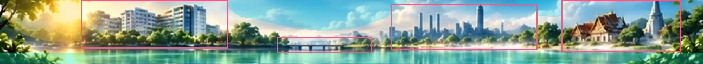
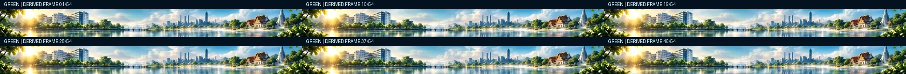
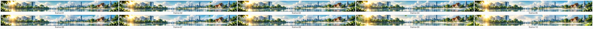

ภาพต้นฉบับ 10 เฟรมต่อสี · Locked Master รักษาอาคารและวัดให้นิ่ง · ส้ม/แดง: ควันจากปล่องลอยขึ้นทางเดียว ไม่ย้อนกลับ · แดง: หมอกฝุ่นและละอองลอยละเอียดทั่วท้องฟ้า · ไม่มีนก/ใบไม้ลอยเสริม · เอฟเฟกต์ควันและฝุ่นเป็นภาพประกอบ ไม่ใช่การตรวจวัดจริง



Animated WebP · MP4 · Manifest
การเปลี่ยนภาพใช้ Mask-based Compositing; เฟรมต้นฉบับ 10 ภาพและ Derived Animation 54 เฟรมเป็นคนละชนิด